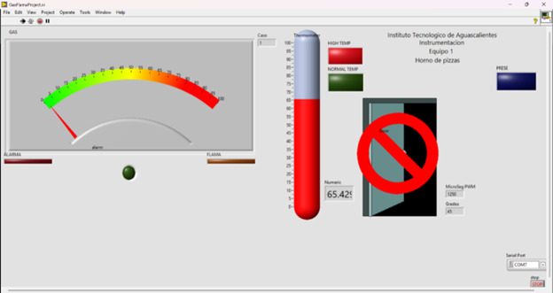

Lo Que Hicimos Paso a Paso
El sistema se comunica con el Arduino a través de un puerto serial usando el toolkit LINX. Este nos permite leer y controlar los sensores y actuadores con facilidad.

¿Con Qué Trabajamos?
Para construir este sistema usamos diferentes sensores y actuadores que nos ayudaron a monitorear y controlar el horno de manera efectiva.
Sensores empleados:
- Sensor de gas (entrada analógica)
- Sensor de flama (entrada digital)
- Sensor de temperatura (entrada analógica)
- Sensor de presencia (entrada digital)
Actuadores / Salidas digitales:
- LEDs indicadores de estado (presencia, flama, temperatura, gas)
- Buzzer de alerta
- Servomotor controlado mediante señal PWM
Panel frontal interactivo:
- Indicadores visuales y controles para el usuario
Funcionamiento del Sistema
El programa en LabVIEW realiza la adquisición, procesamiento y visualización continua de los datos provenientes de sensores conectados vía comunicación serial.
Si la temperatura supera 125 °C, se activa un indicador y un servomotor bloquea la puerta del horno como medida de seguridad. Alarmas visuales y sonoras también se activan ante detección de gas o flama en condiciones peligrosas.
El sistema evalúa combinaciones de condiciones críticas para proteger al equipo y al usuario, mostrando el estado en un panel frontal.
En particular, detecta la presencia de gas sin flama para activar alertas y evitar riesgos por acumulación de gas no quemado.
Cuando el sistema está en condiciones normales, la puerta permanece desbloqueada y no hay alertas activas.
Horno en temperatura normal
En la siguiente figura se puede apreciar que, efectivamente, el LED indicador de temperatura normal se enciende y el servomotor está en la posición correspondiente a que la puerta aún no está asegurada porque no hay riesgo en el sistema.

Detectando presencia:
En la figura anterior se puede observar que ahora se ha detectado presencia con el sensor de movimiento, por tanto, el LED indicador de presencia (en color blanco) se enciende, además se ha detectado una alta temperatura y el indicador de temperatura alta también se enciende. Desde este punto, el servomotor se mueve ya que asegurar la puerta cerrada del horno permitiría no correr un riesgo más grande.
El sensor de temperatura ha detectado una temperatura muy alta y por ende el indicador de dicho nivel está activado. Cuando el sensor de flama detecta el fuego, se enciende el indicador de flama. En la interfaz también se muestra la animación de que hay fuego en el área.

Sensor de flama activo:


La imagen anterior, ocurre que cuando el sensor de flama se activa, el sistema detecta por lógica que la temperatura es alta, sin embargo, existe un led también indicador de que el sensor ha detectado flama y por tanto se corre riesgo. Aquí el servomotor toma la misma posición indicando que se ha asegurado la puerta del horno para no agravar el accidente.
El siguiente caso ocurre cuando no hay flama, pero el sistema detecta que hay una fuga de gas. El sensor de gas detecta presencia de gases y advierte de tal forma que se presenta una animación en la interfaz, además, el buzzer se activa para generar una alarma.
Horno con gas pero sin flama

En esta última figura, se acerca un encendedor convencional al sensor para que solo salga gas y no se encienda la llama de este dispositivo. Este sensor es capaz de detectar este tipo de gas y generar una salida analógica para leerla en forma de voltaje con su respectiva resolución.
También se dispone de un indicador LED que nos permite saber que la alarma se ha activado y hay suficiente gas para generar una explosión o flama. Este es un indicador de que cualquier movimiento debe ser muy cuidadoso porque, aunque no exista flama, hay una cantidad de gas presente en el área y que puede ser muy peligroso.
¿Qué aprendimos en este proyecto?
En conclusión, este proyecto nos permitió desarrollar y comprender un sistema automatizado integral para la supervisión y control seguro de un horno industrial. Mediante la integración de sensores de gas, temperatura, flama y presencia, junto con actuadores como LEDs, buzzer y servomotor, logramos crear una interfaz que monitorea en tiempo real y responde automáticamente ante condiciones críticas. Esto demuestra cómo la combinación de hardware accesible y software visual puede incrementar la seguridad y eficiencia en procesos industriales, previniendo accidentes y mejorando el control operativo.